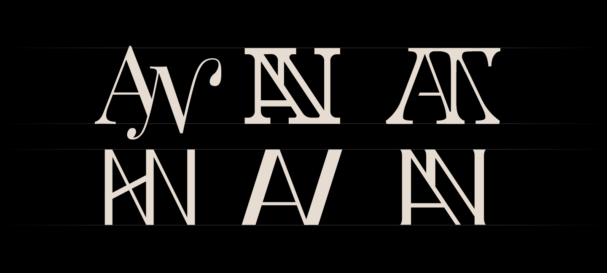
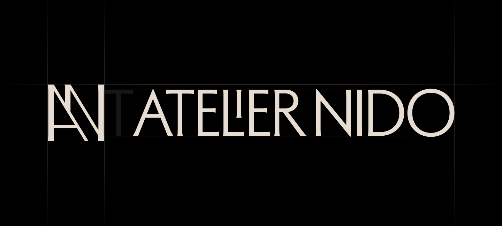
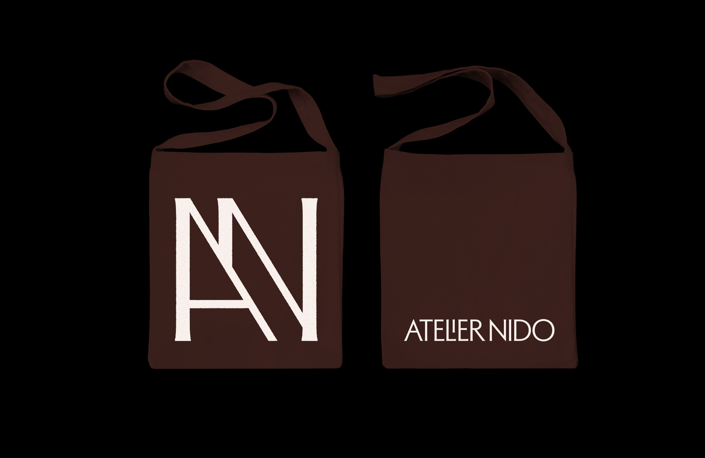

Atelier Nido Rebrand
Branding
Background
Atelier Nido is an architecture studio led by Jules Romier. With over a decade of experience in luxury residential and architectural design, Jules Romier has shaped projects ranging from Hamptons estates to Miami interiors and boutique island retreats.
Project Overview
Romier approached me to refresh his brand to celebrate the maturing and growth of his luxury architecture studio over the past year. The original logo featured a high contrast monogram accompanied with a humanist typeface. I looked to improve the monogram's legibility across various sizes and applications.

My process began with sketching out a wide range of monogram styles. As a luxury architecture studio, I wanted to evoke a timeless elegance.
I took inspiration from classic serif and script-based typefaces, authoratative slab serif monograms, all the way to vintage humanist san-serif typefaces.
I took inspiration from classic serif and script-based typefaces, authoratative slab serif monograms, all the way to vintage humanist san-serif typefaces.

The final logo ended up being a combination of the first and second option. Romier enjoyed the uppercase version of the typeface Adelia with its unique "LI" ligature that creates a special moment of interest in the wordmark.
I created an accompanying monogram inspired by the diagonal overlapping rafters found on Romier's Villa Kasalong building. The logomark also references Adelia's tiny serifs, giving a nod to classical humanist fonts while maintaining a contemporary sensibility.
I created an accompanying monogram inspired by the diagonal overlapping rafters found on Romier's Villa Kasalong building. The logomark also references Adelia's tiny serifs, giving a nod to classical humanist fonts while maintaining a contemporary sensibility.

I extended the brand into multiple forms of collateral including stationery, business cards, a slide deck template, totes, and a website landing page.

